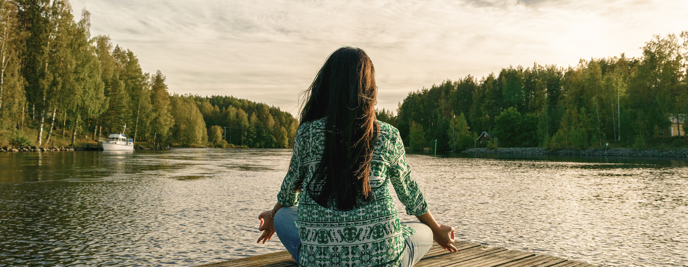

Giv dig selv et øjeblik.
Et sted til dig
Måske har du brug for en pause, lidt inspiration eller bare et øjeblik til dig selv.
Her finder du gratis råd og overskuelige øvelser, som du kan bruge i dit eget tempo.
Gode råd og inspiration til at finde ro
Læs om mental trivsel, refleksion og det at koble fra.
Læs gode råd